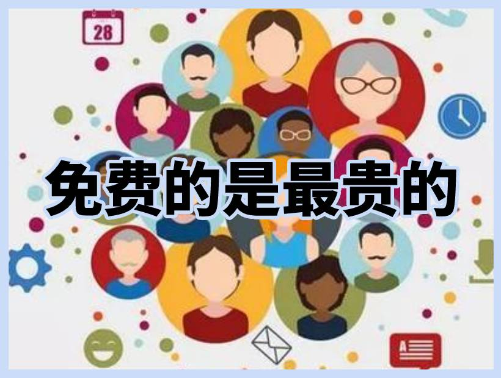

约会软件哪个不用充值？
约会软件哪个app不用充值？据威赛夫的权威约会软件数据分析：目前整个约会社交软件市场，付费约会软件占比60%左右，免费约会软件占比30%左右，另外10%的市场为可以充值也可以不充值。单纯从使用体验（约会成功率）来看，付费约会软件的用户体验更好。
不用充值的约会软件
中国的互联网用户习惯于免费，这是由中国特殊的互联网发展历史决定的。中国的网络约会用户往往从骨子里认为app就应该是免费的，但是有句话说得好：免费的才是最贵的。
▲免费的约会软件是最贵的。
免费的约会app虽然可以吸引很多用户的注册、体验、使用，但是往往鱼龙混杂，大大降低男女双方约会成功的概率。不用充值的约会软件往往因为门槛低、用户身份掺假、信息造假等一系列问题，造成使用者的极大困扰，不仅浪费时间和精力，更让约会的心情饱受影响。
中国有3亿多单身人口，约会软件市场是一个非常巨大的蓝海市场，男女异性间的约会社交需求是一个刚性需求。
威赛夫的专业数据统计显示：不用充值的约会软件市场占有率正在逐年下降，一些充值VIP的专业约会社交软件占有率正在快速增长。这一方面得益于中国大陆约会软件需求的井喷式增长，另一方面得益于收费模式带来的利好影响。
不用充值的约会软件正在消亡
不用充值的约会软件因为用户间极低的约会成功率而正在逐年消亡。
有目共睹：近年来，中国互联网用户的付费习惯正在被逐步养成。这一习惯最明显的领域体现在视频app行业。爱奇艺、优酷视频、腾讯视频、芒果视频等都需要开通付费VIP才能观看最新最火的流行电视剧。不久的未来，社交约会软件也是如此。
付费是成功约会的至上法宝
免费的社交约会软件是最贵的，付费的看似花钱了，却生了时间和精力，也顺利取得了对方的欢心。
只要是金钱能解决的问题，都不叫问题。在约会软件里充值VIP不仅可以获取相应的虚拟身份和地位，更可以获得很多专有的约会聊天功能，让你快速约会成功，快速脱单。
提醒：威赛夫是中立、客观、非盈利的第三方约会交友软件评测商，我们致力于评测靠谱、好用、免费的约会app软件。愿你在互联网交友的世界里，约会到新的朋友！网络约会有风险，交友需谨慎！